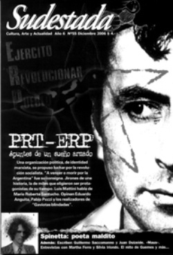

Buscar
PRT-ERP: Apuntes de un sueño armado
Una organización política, de identidad marxista, se propuso luchar por la revolución socialista. "A vencer o morir por la Argentina" fue su consigna. Jirones de una historia, la de miles que eligieron ser protagonistas de su tiempo. Luis Mattini habla de Mario Roberto Santucho. Opinan Eduardo Anguita, Pablo Pozzi y los realizadores de "Gaviotas blindadas".
Edición N° 55
Diciembre 2006
Revista bimensual
Comprar edición impresaSumario
- PRT-ERP: Apuntes de un sueño armado
- Esa historia...
- Tester de Spinetta
- Martha Ferro: la justiciera del Gatillo Fácil
- MAUS: Sobrevivir para contarla
- Los premios: a propósito de Cortázar y Fresán
Compartir Articulo
1. El viento calcinante agitaba apenas el cañaveral. Fue un segundo. Dos siluetas invisibles, un rumor. Después, nada. Para cuando los matones de los Frías Silva volvieron a buscar con la vista movimientos sospechosos, sólo el sonido de los grillos se distinguía en la plantación. Por las dudas, se mantuvieron alertas, al menos hasta que el rumor de la movilización de cañeros avanzando del lado opuesto del ingenio, los obligó a abandonar su posición. Ya venían... Panza abajo, protegidos por la espesura, las dos siluetas invisibles murmuraban. Ya llegan, es ahora, dijo uno. El otro no dudó, prendió la molotov y, en dos movimientos, se paró y la lanzó con precisión contra el puesto de la guardia. El fuego, en la maloja reseca, explotó. Y comenzó a ganar el cañaveral. Ahora sin cuidados, Robi y el Negrito abandonaron su refugio para salir corriendo hacia la tranquera. Atrás, las lenguas de fuego invadían el ingenio San José. Atrás, los matones de los Frías Silva se dispersaban confusamente ante el ataque por la retaguardia. La multitud de cañeros aprovechó el estallido del fuego para avanzar y ocupar con fiereza el ingenio. En un rato, las siluetas invisibles se sumaban al grupo que tomaba el imperio de los Frías Silva.
Antonio Enrique del Carmen Fernández se llamaba una de las dos siluetas sigilosas que esa tarde incendiaron el cañaveral. El Negrito, le decían, y desde los ocho años se había incorporado a la zafra, dejando el colegio en segundo grado. Hijo único de doña Lucía, sirvienta de los patrones, el Negrito había sido también limpiabotas y, cuando podía, entrenaba para boxeador. Para sus compañeros del ingenio San José, fue con los años erigiéndose en una referencia de lucha durante la oleada de huelgas en la industria azucarera, a principios de los sesenta, en Tucumán. Escuchaba, en silencio y con respeto, el relato de los viejos cañeros que en los cuarenta habían protagonizado una huelga grande que duró 45 días por el cierre de unos seis ingenios, con policía, ejército y muertos incluidos. Muchos años después, cuando ya había aprendido a leer y escribir, el Negrito se encargaría de poner sobre papel los detalles del régimen de explotación extrema al que eran sometidos: "Esto es lo que recordaba la gente vieja: decían que se los trataba como animales, y que no los amparaba ninguna ley de trabajo; decían que en la fábrica se trabajaba 16 horas por día; recordaban que en un tiempo les daban de comer en bationes que tenían en la fábrica. Esto lo hacían para ganar más tiempo en la producción, decían que había que andar más rápido, también llegaron a usar el látigo. (...) En el cerco el trabajo es más duro y sacrificado. ¿Por qué? Porque los obreros tenían que levantarse más temprano para ir al surco a las dos o tres de la mañana".
"También decían que cuando un compañero quería que sus hijos aprendan a leer, los patrones trataban de desmoralizarlos, que no pierdan el tiempo, cómo lo iban a estar manteniendo, que lo lleven a trabajar con ellos al cerco; le decían los patrones: ¿acaso vos no te has criado trabajando? El día de mañana se cría y se te manda a mudar a Buenos Aires. ¿Qué remedias? Algunos les contestaban que ya que ellos no habían tenido esa suerte de aprender a leer que la tengan sus hijos para que el día de mañana sepan defenderse. Esto no le gustaba a los patrones", contaba el Negrito.
También escuchaba el Negrito el relato de los zafreros cuando se referían al "Familiar". En ese momento, bajaban la voz, cuchicheaban casi el acuerdo entre aquel monstruo que se aparecía por las noches y los patrones, que lo contrataban para sacarse de encima laburantes rebeldes: "Los patrones tenían un poder muy grande, un contrato con el 'Familiar' que era hijo del Diablo, lo que pasaba era que cuando un obrero quería organizar algo con el conjunto para protestar por las injusticias, decían que la patronal lo hacía citar a una hora determinada de la noche y los patrones agarraban, lo mataban y después la respuesta que le daban a la gente, le decían que el 'Familiar' lo había llevado porque había protestado y le faltó el respeto al patrón. De esa manera conseguían que la gente no se organizara y que tenga un pánico espantoso. Compañeros, les aclaro que la gente todavía es creyente en estas cosas, en el asunto de brujos y de demonios, en la zona montañosa. Todo esto les debe dar una idea que no era fácil organizar a los compañeros".
No era nada fácil, pero el atraso en los pagos y el cierre de ingenios en 1961 fue encendiendo los ánimos. En ese año, en el ingenio San José, se produce la primera ocupación de fábrica con toma de rehén: el administrador, "que era audaz y quiso hacerse el malo", cuenta el Negrito. "Le explicaron los compañeros que se terminaron las épocas del 'Familiar' y que estábamos dispuestos a todo si no pagaban. San José salió al otro día en el diario con letras grandes". El conflicto fue un triunfo para los obreros, la patronal reconoció los días de huelga, pagó sueldos atrasados y se comprometió a no tomar represalias contra los huelguistas. Por entonces, la presión de los trabajadores terminó por recuperar la Federación Obrera Tucumana de la Industria del Azúcar (FOTIA), donde se impuso una dirección combativa. Desde la FOTIA se fue radicalizando el plan de lucha, con Leandro Fote como el dirigente más destacado de la nueva conducción. En una de aquellas reuniones en el sindicato, el Negrito, ahora secretario adjunto del ingenio San José, separó a Fote y lo enfrentó con sus dudas y los rumores que la gente contaba sobre su militancia: "Nos apartamos con Leandro y yo le pregunto si era verdad que era comunista; se sorprendió, titubeó un poco y me dijo que no. ¿Y cómo la gente dice que vos sos comunista? Y entonces le agregué si porque lo habían metido preso, y le dije, bueno, quedate tranquilo ya veo que me tenés desconfianza; no tengas miedo, presentame esa gente y que me explique la política y el sindicalismo porque yo no sé ni mierda, hermano. Después me dice: Sí, te voy a presentar".
2. La tormenta se asoma, amenazante, y potencia la infinita sensación de pequeñez del bote a medio camino, en mitad del río. Las islas Lechiguanas, al norte del Delta del Paraná, todavía no dejan ver sus bordes por la bruma espesa, y el bote se bambolea peligrosamente. A bordo, un hombre consulta sus notas, mitad ansioso y mitad sereno por llegar a destino. ¿Sabe Benjamín a quién transporta en su bote rumbo a las islas esa madrugada? ¿Sabe algo de ese hombre que consulta sus notas con los primeros rayos de luz, vestido humildemente, morocho, silencioso? ¿Sabe Benjamín que será un revolucionario respetado y admirado, seguido y perseguido, desaparecido y demonizado, y olvidado por la noche de los tiempos?
Sabe, eso sí, que su pasajero forma parte de la dirección de un joven partido, que lo espera una importante reunión (el V Congreso, sabe) a realizarse en el ranchito de un viejo anarquista, un ermitaño, único habitante de las Lechiguanas.
No sabe que su pasajero, apenas unos meses atrás en el tiempo, en la soledad de su celda, escribió: "Una tarde,/ rodeado de la verde claridad de tu paisaje,/ atravesada mi delgada corteza/ por el estridente desafío de tu líder,/ fortalecido en mi entrega/ ante la abnegada presencia de mis hermanos/ heroicos partícipes de tu sufrimiento,/ con mi roja savia/ calentándose en el apretado brazo/ del informe coloso/ que te calcina y te fecunda,/ descubrí mis entrañas,/ supe que tu rebeldía me pertenece,/ aprendí que mis fibras/ -como el estirado cuero de tu voz-/ sólo se satisfacen y trascienden/ con el rítmico golpear/ que en el nombre del futuro/ reclama la lucha por tu liberación".
3. El clima seguía caldeado en Tucumán y crecía la resistencia ante nuevos despidos en los ingenios. Al mismo tiempo, se multiplicaba la influencia de la FOTIA entre los trabajadores. Cada toma de fábrica, cada movilización, cada paro, integraba también el problema de la autodefensa ante la represión que convocaba la patronal. "Les aclaro que la gente llevaba piedras y palos, machetes y cuchillos de pelar caña. Tomamos la fábrica, la patronal al principio nos apunta y al ver que toda la gente avanzaba y que los soldados y la policía no querían tirar, también se cagaron de miedo, subieron a los autos y se fueron", recuerda el Negrito.
Entre aquella multitud de cañeros, la figura de un morocho santiagueño de voz tenue y nariz aguileña no llamaba la atención. Trabajaba, desde hacía algún tiempo, en la contaduría del sindicato del San José y conocía a todos los dirigentes de la FOTIA. Era uno más en las tomas y en las huelgas, pero se distinguía del resto cuando había que enfrentar a los matones de la patronal. Decidido, iba al frente en las acciones de sabotaje. Aportaba propuestas, guardaba silencio para escuchar a los obreros de la zafra, hablaba en voz baja, pero con una firmeza poco habitual. Con los días de conflicto, acompañaba al Negrito Fernández a todos lados, y la gente lo escuchaba. Traía siempre consigo el periódico Norte Revolucionario, y en la intimidad reconocía su pertenencia al Frente Revolucionario Indoamericano Popular (FRIP), con cierta presencia en Santiago del Estero, Chaco, Salta y Tucumán.
Se llamaba Mario Roberto Santucho, o Robi a secas. Por entonces, el FRIP había cerrado un acuerdo con el grupo trotskista Palabra Obrera para conformar el Partido Revolucionario de los Trabajadores (PRT). Robi y otros compañeros del PRT se ocuparon de instalar una escuela en el sindicato para los hijos de los obreros, con lo cual estrecharon relaciones con las familias y no había bautismo, casamiento o cumpleaños al que no fueran invitados por la gente de la zona. También aportaron sus conocimientos para alfabetizar a varios dirigentes de la FOTIA, y el Negrito Fernández fue uno de los primeros en aprender a leer y escribir en esos cursos que daba Santucho en el sindicato.
A bordo de una motoneta desgastada o en colectivo, bajo el sol calcinante, Robi y el Negrito recorrían diariamente los ingenios para intentar unificar la lucha. Aparecían por todos lados: "Con respecto a los que nos dijeron que somos comunistas, les preguntamos si ellos querían alguna vez tener todas las comodidades, trabajar, que se los respete como hombres, que se les pague al día y que puedan mandar a sus hijos a las escuelas o a la Universidad como mandan a sus hijos los patrones, y les preguntamos si ellos estaban de acuerdo con lo que dijimos y nos contestaron que sí. Entonces aprovechamos y les dijimos: si piensan así también es que son comunistas. Alguna gente nos dice que si somos comunistas no les interesaba, que digan lo que quieran pero peor es ser vende obrero y alcahuete o policía; nosotros dijimos que preferíamos que nos digan comunistas pero menos capitalistas chupasangre", anotaba después el Negrito, integrado ya a la vida partidaria del PRT por medio de la influencia decisiva de Santucho.
En una carta dirigida a su hermano Julio, Robi reconocería los avances de su joven partido y, también, el desarrollo de su propia conciencia política a partir de la intervención en el conflicto azucarero: "Nuestro trabajo entre los obreros en fábricas, barrios, obrajes, aserraderos, y entre los agricultores, nos va obligando a consultar la teoría, lo que dice la filosofía sobre el hombre, sobre la enajenación, sobre las limitaciones del hombre y los caminos sobre su liberación, y así viendo la realidad, conversando sobre ella, intercambiando experiencias entre todos los compañeros, (...) vamos comprendiendo el camino por el que encontraremos la salida. Ese camino sabemos que es la revolución".
"Desde que nosotros estábamos en el Sindicato se tomó 16 veces la fábrica, en todo eso andaba Santucho, la gente lo apreciaba mucho, y decía que no interesaba cómo pensaba él, si era comunista pero venía a luchar por nosotros. Ya se deben imaginar cómo nos poníamos contentos. Fue así que lo hicieron hablar en asamblea varias veces. Les aclaro que cuando había muchos paros la gente decía que sería lindo dejar un jornal todos los meses para comprar armas porque con hondas ya no hacíamos nada...", comentaría el Negrito.
Desde entonces, para Santucho el papel del proletariado azucarero en la lucha sería el de vanguardia de la clase obrera, cada vez mejor organizado y con mayor conciencia. Sin embargo, los cañeros padecerían un golpe devastador con la dictadura de Onganía: el cierre de once ingenios, que suponía la destrucción de la economía provincial. La ola de protestas se hizo incontenible. El 12 de enero de 1967 será una fecha clave para la historia de Santucho y del PRT, el día en que quedará más clara que nunca la necesidad de superar la lucha reivindicativa por la política y asumir, de una vez por todas, que la revolución no podía dejar de contar con una respuesta armada ante las fuerzas de la represión. Ese día, como parte del Plan de Lucha Azucarero Nacional, la FOTIA convocó a una multitudinaria marcha en Bella Vista. El enfrentamiento fue inevitable. Los obreros, con hondas y molotovs, chocaron con fuerzas policiales desbordadas por la multitud. En pleno retroceso, la policía disparó balas de plomo contra la manifestación y asesinó a Hilda Guerrero de Molina. "Al día siguiente, en el Ingenio San José, el ambiente entre los obreros es de satisfacción por la enérgica actitud asumida y plantean reiteradamente a los militantes del partido que hay que armarse, conseguir ametralladoras e ir a la lucha a muerte contra la dictadura. Esta conclusión se estaba generalizando a esta altura entre los trabajadores azucareros y amplios sectores de la vanguardia obrera de todo el país", explicará Santucho más tarde.
Y el PRT no hará oídos sordos al reclamo de los obreros tucumanos...
(La nota completa en la edición gráfica de Sudestada)
Entrevista con el historiador Pablo Pozzi
"El PRT-ERP puso sobre la mesa el tema del poder"
"Fue una organización que planteó la combinación de múltiples formas de lucha para la toma del poder -entre las cuales, la lucha armada era fundamental- dirigidas por un partido marxista-leninista que crearía un ejército popular. El PRT-ERP fue una experiencia excepcional de desafío al capitalismo en la Argentina", escribió el historiador y docente Pablo Pozzi, en su exhaustiva investigación Por las sendas argentinas... PRT-ERP: La guerrilla marxista. Criticado y elogiado, el trabajo de Pozzi cuenta con la virtud de romper con varios de los lugares comunes que se han impuesto sobre la experiencia guerrillera en Argentina.
¿Qué elementos destacarías de tu investigación sobre el PRT-ERP?
Si tengo que rescatar algo de mi investigación, con todas las limitaciones que puede tener, es que todo el mundo habla de la guerrilla pero muy pocos investigan. La intención es plantear la discusión desde otro lado: basta de impresionismo, basta de testimonios... ¿Sabés qué? Datos, algo más científico. Y la segunda cuestión, que es más importante: lo que yo descubrí sobre la guerrilla implica que tenemos que repensar la historia argentina. Que la sociedad argentina no es como pensábamos que era y que el proceso de politización de la gente dice muchísimas más cosas de las que nosotros pensamos. Por ejemplo, encuentro que un montón de guerrilleros provienen de pueblos chicos. Encuentro que el PRT-ERP incorpora muchísima gente que viene de familia peronista, que la estructura social del PRT-ERP reproduce en gran medida la estructura demográfica nacional. O sea, que el PRT-ERP es nacional no porque tenga gente en La Quiaca, sino porque deriva gente de todos los sectores sociales en proporciones similares a la demografía histórica del país. Esto implica algo importante: significa que recluta militantes entre peronistas, radicales católicos, etc. ¿No era que el marxismo era extranjerizante? ¿Cómo es que estos tipos, que además de ser muy antiperonistas, eran muy abiertamente marxistas, lograron semejante inserción? ¿Qué pasó para que a muchos de estos militantes que provenían de esos orígenes no les fuera contradictorio su peronismo-catolicismo-marxismo?
El PRT-ERP hizo algo importante: una ruptura con continuidad, donde no era contradictorio que el padre Nelio Rouggier de Córdoba fuera del ERP. O que los obreros peronistas de la seccional Clodomira de ferroviarios fueran del ERP. ¿Cómo puede ser eso? Mi hipótesis en ese sentido es que la visión del marxismo que manejaba el PRT era poco ortodoxa; era dinámica, viva, interesante, abrevaba de diversas corrientes. Eso fue fundamental y correcto científicamente, pero en el caso de nuestra cultura es algo muy extraño. Por eso logra desarrollarse tanto, sobre todo entre los obreros industriales y particularmente en el interior, en una forma mucho más importante que Montoneros, lejos...
(La entrevista completa en la edición gráfica de Sudestada)
Entrevista con Luis Mattini
"Santucho confiaba en que la práctica curaba todo"
"Esa ambivalencia entre profundidad y fuga en su mirada, me desconcertaba. Nunca pude determinar si era una manifestación de timidez o una inconsciente toma de distancia con el interlocutor. Quizás ambas cosas. Porque la timidez se eclipsaba con su envidiable seguridad, expresada en todos los casos con extrema sencillez. (...) Santucho persuadía, convencía. Pero no convencía porque era el que más sabía -si de conocimientos adquiridos se tratase-, convencía porque era el que más creía", señala Luis Mattini en su libro Los perros. Después de compartir durante varios años la experiencia de la dirección política del PRT-ERP, Mattini fue designado para ocupar la secretaría general del partido después de la caída en combate de Mario Roberto Santucho, en julio de 1976. Más allá de los tiempos que siguieron, la división y extinción del PRT como organización y de los varios debates (no siempre muy fraternos que digamos) que sigue protagonizando con otros ex militantes; la palabra de Mattini nos permite hoy acercarnos un poco a uno de los personajes relevantes del siglo pasado en Argentina.
¿Qué elementos hay que tener en cuenta para comprender la ascendencia de Santucho en el PRT-ERP?
Yo sentía esa influencia. Era una atracción que sentías por un tipo que ves que tiene algo. Pero a mí me resultaba un poco más fácil separar las cosas: no era el más valiente, porque había muchos tan valientes como él; y tampoco era un gran orador, por circunstancias de la vida y porque no eran muchos los buenos oradores del partido. Lo que quiero decir es que no era más que el común de los cuadros que tenía el PRT en ese momento, en algunos aspectos descollaba más uno que otro pero en ese nivel era muy parejo todo. Entonces qué queda... Creo que Santucho tenía una cosa que tiene que ver más con el deseo que con la percepción de conciencia. Tiene que ver con un tipo que está absolutamente convencido que el camino es ése, y tiene una enorme capacidad de persuasión sobre los demás. No demostraba dudas, a diferencia de los demás que sí las teníamos. Entonces vos zanjabas las dudas con él. Era una referencia, alguien que tenía una percepción sobre la vida de las personas que servía como guía, y ese es el fenómeno de los líderes, que no se puede describir con palabras. Pero el efecto existía.
Santucho era indiscutible. A nadie se le podía ocurrir dudar de su liderazgo. Vos podías discutir con él un montón de aspectos parciales, me acuerdo que discutíamos mucho el tema sindical, pero el liderazgo no. Esa cosa que el tipo tenía que lo hacía un líder, un líder extraño incluso, porque no tenía un discurso muy potente. Un elemento que a mí me parece muy fuerte es que era un tipo que lo que decía, lo hacía. Y en aquellos años, cuando había muchos charlatanes, Santucho siempre se ponía adelante para hacer cualquier cosa que se votara. Tanto es así, que cuando se desarrolló el PRT tuvimos que tomar medidas orgánicas para frenarlo, porque se anotaba en todas. Esa fue una propuesta mía después que cayó preso, porque era una barbaridad arriesgar a un dirigente de ese tipo en operaciones que podían hacer otros cuadros. Y se votó que no participara en ninguna operación militar en las ciudades, hasta que no se afirmara la guerrilla en el monte, por lo menos. Pero lo teníamos que atar. Y él votó en contra de esa medida, pero se la ganamos.
¿Santucho era conciente de esa influencia?
Era conciente y tenía muy asimilado el papel que jugaba. Él sabía que jugaba un papel determinante y eso hacía que controlara su conducta. Porque al ser el referente, después se transformaba en un modelo para la militancia. Una cosa que me llamaba la atención era su extremo cuidado, no se le escapaba detalle, y eso para mí fue una autoconstrucción formidable, porque después su hermano me contó que Robi era un tipo muy distraído, de esos que se embalan y se olvidan de lo que pasa alrededor. Eso lo corrigió con fuerza de voluntad, por eso cada vez se autoconstruía más. Lo mismo ante una situación grave, no perdía nunca la serenidad ni la tranquilidad. Lo lograba mejor que nadie, por eso ante la desesperación del resto uno siempre iba a encontrar al tipo tranquilo.
¿Cómo era su vínculo cotidiano con los militantes?
Acá habría que separar dos planos: uno que tiene que ver con las inquietudes en común de las personas, donde vos disfrutás de las mismas cosas. Yo, por ejemplo, con un tipo como el Gringo Menna me sentía como con un compañero del colegio, por los códigos que había. Lo mismo me pasaba con Benito Urteaga. Con Robi eso era más difícil, él tenía otros parámetros más norteños, tenía otros ritmos, y además no teníamos los mismos gustos. Por eso digo que no tuve una amistad con él. Pero sí una relación política orgánica, porque él tenía algo muy marcado: confiaba en que la práctica curaba todo. Primero, confiaba que las personas cambian, que se van haciendo, que no nacen de una determinada manera. Una forma de pensar materialista, bien marxista, digamos. Y por eso insistía tanto con la práctica de masas. Y al mismo tiempo, era intransigente, muy riguroso. No era contemporizador. Él marcaba la cosa, cuando quedaba claro si había un error por negligencia o era inevitable, entonces sí después y a partir de ahí te levantaba y te recuperaba. Lo que no admitía era el doble discurso, o la justificación. Y en eso tenía una fuerte intuición cuando alguien estaba bicicleteando...
(La entrevista completa en la edición gráfica de Sudestada)
Comentarios
Hugo Montero
Articulos más vistos


LIBRERÍA SUDESTADA

Colección infantil

Distribuidora de Libros

Suscripción

Sudestada en URUGUAY

Otros articulos de esta edición
Martha Ferro: la justiciera del Gatillo Fácil
Como segunda parte del informe presentado en el número anterior sobre ¡Esto!, publicamos la entrevista a quien fuera cronista de ...
Tester de Spinetta
El mundo creativo de Luis Alberto Spinetta, desde sus inicios, estuvo signado por la poesía y la imaginación. Con más ...
MAUS: Sobrevivir para contarla
Precursora del espíritu que en 1986 invadió al cómic de superhéroes -y que le dio lugar a su adultez con ...
Los premios: a propósito de Cortázar y Fresán
 Editorial
Editorial